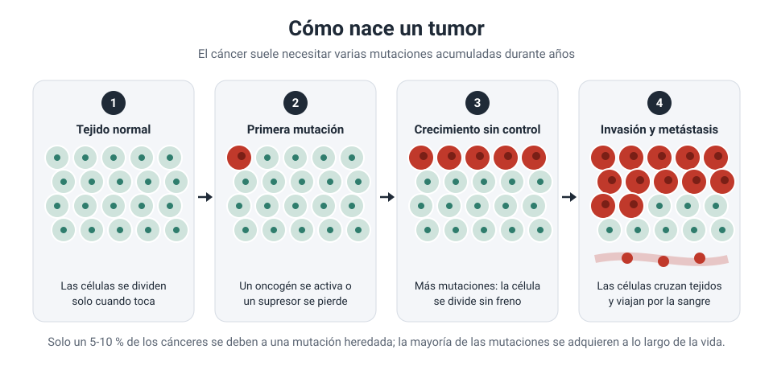

Información divulgativa. No sustituye la valoración de un profesional sanitario ni el consejo genético.
En pocas palabras
| Qué es | Un grupo de células que se dividen sin control e invaden otros tejidos |
| Causa de fondo | Cambios en el ADN de una célula que se acumulan a lo largo de los años |
| Heredado | Solo el 5-10 % de los cánceres tienen una causa hereditaria clara |
| Genes clave | Oncogenes (aceleradores) y genes supresores de tumores (frenos) |

El cáncer es una enfermedad genética, pero no hereditaria
Decir que el cáncer es una enfermedad de los genes sorprende a mucha gente, porque la mayoría de los tumores no aparecen en otros miembros de la familia. La clave está en distinguir dos tipos de cambios en el ADN:
- Variantes germinales: están en el óvulo o el espermatozoide que nos formó, y por tanto en todas las células del cuerpo. Son las que se heredan y se transmiten a los hijos. Explican solo un 5-10 % de los cánceres, como los relacionados con BRCA1 y BRCA2 o el síndrome de Lynch.
- Variantes somáticas: aparecen a lo largo de la vida en una sola célula y en sus descendientes. No se heredan ni se transmiten. Son la causa de la gran mayoría de los tumores.
Cada vez que una célula se divide copia sus 6.000 millones de letras de ADN, y aunque la maquinaria de copia es muy precisa, se cuelan algunos errores. A eso se suman los daños causados por el tabaco, la radiación ultravioleta, el alcohol, ciertos virus como el del papiloma humano, y simplemente el paso del tiempo. Por eso el cáncer es mucho más frecuente en personas mayores: han tenido más años para acumular errores.
Aceleradores y frenos
Las células sanas se dividen solo cuando reciben la orden y se detienen cuando deben. Ese control depende de dos grandes familias de genes:
- Oncogenes: en su forma normal (protooncogenes) dan la orden de crecer. Cuando una variante los deja "encendidos" permanentemente, actúan como un acelerador atascado. Basta con que se altere una de las dos copias. Ejemplos: KRAS, EGFR, HER2 (ERBB2) o MYC.
- Genes supresores de tumores: frenan la división, reparan el ADN o hacen que una célula dañada se autodestruya (apoptosis). Para que dejen de funcionar suelen tener que fallar las dos copias. Ejemplos: TP53, RB1, APC, BRCA1 y BRCA2.
En 1971, el pediatra Alfred Knudson estudió el retinoblastoma, un tumor del ojo infantil, y propuso la hipótesis de los dos golpes: los niños con la forma hereditaria nacen con un golpe ya dado en el gen RB1 y solo necesitan un segundo golpe en una célula del ojo, por eso desarrollan tumores antes y en los dos ojos. Los niños con la forma esporádica necesitan dos golpes en la misma célula, algo mucho más improbable. Esta idea explica por qué las personas con una variante hereditaria en un gen supresor tienen un riesgo tan alto.
Un proceso en varios pasos
Un tumor no aparece de golpe. En el cáncer de colon, Bert Vogelstein y su equipo describieron a finales de los ochenta una secuencia típica: una variante en APC produce un pequeño pólipo, después KRAS lo hace crecer, y la pérdida de TP53 lo convierte en un cáncer invasivo. El proceso suele durar 10 o 15 años, y por eso funcionan los cribados con colonoscopia: permiten extirpar los pólipos antes de que se malignicen.
La mayoría de los tumores sólidos tienen entre unas pocas decenas y varios cientos de variantes, pero solo unas pocas, llamadas variantes conductoras (drivers), son las que realmente impulsan el cáncer. El resto son pasajeras: errores que la célula arrastra sin consecuencias.
Las capacidades del cáncer
En 2000, Douglas Hanahan y Robert Weinberg resumieron lo que una célula necesita para convertirse en un cáncer en una lista de "rasgos distintivos" (hallmarks), que ampliaron en 2011 y 2022:
- Mantener señales de crecimiento por sí misma.
- Ignorar las señales que frenan la división.
- Resistir la muerte celular programada.
- Dividirse sin límite, evitando el acortamiento de los telómeros.
- Fabricar nuevos vasos sanguíneos que la alimenten (angiogénesis).
- Invadir tejidos vecinos y extenderse a distancia (metástasis).
- Cambiar su metabolismo y escapar del sistema inmunitario.
Detrás de muchas de estas capacidades hay inestabilidad genómica: cuando fallan los genes que reparan el ADN, los errores se acumulan mucho más rápido. Es lo que ocurre en el síndrome de Lynch o con BRCA.
Un tumor, muchas poblaciones
Un tumor no es un bloque uniforme. Mientras crece, sus células siguen acumulando cambios y forman subpoblaciones distintas, igual que las especies evolucionan por selección natural. Esta heterogeneidad explica por qué un tratamiento puede funcionar al principio y dejar de hacerlo: las células que tenían, por azar, una variante de resistencia sobreviven y vuelven a crecer.
Por qué importa conocer los genes del tumor
Hoy los tumores se estudian con paneles de secuenciación que buscan las variantes conductoras. Sirven para elegir tratamientos dirigidos, explicados en oncología de precisión, y para seguir la enfermedad con la biopsia líquida. A veces el estudio del tumor revela una variante que también está en la sangre, es decir, hereditaria, y entonces se ofrece consejo genético a la familia.
Qué se puede hacer
Como la mayoría de los cánceres dependen de errores acumulados, la prevención sigue siendo muy eficaz: no fumar, protegerse del sol, limitar el alcohol, mantener un peso saludable, vacunarse frente al virus del papiloma humano y la hepatitis B, y participar en los programas de cribado de mama, colon y cuello de útero.
Ver también: Cáncer hereditario, Mutaciones y variantes y Genes y ambiente.
Fuentes
- Hanahan D, Weinberg RA. Hallmarks of cancer: the next generation. Cell. 2011;144(5):646-674. doi:10.1016/j.cell.2011.02.013
- Hanahan D. Hallmarks of cancer: new dimensions. Cancer Discov. 2022;12(1):31-46. doi:10.1158/2159-8290.CD-21-1059
- Knudson AG. Mutation and cancer: statistical study of retinoblastoma. Proc Natl Acad Sci USA. 1971;68(4):820-823. doi:10.1073/pnas.68.4.820
- Vogelstein B, Papadopoulos N, Velculescu VE, Zhou S, Diaz LA, Kinzler KW. Cancer genome landscapes. Science. 2013;339(6127):1546-1558. doi:10.1126/science.1235122